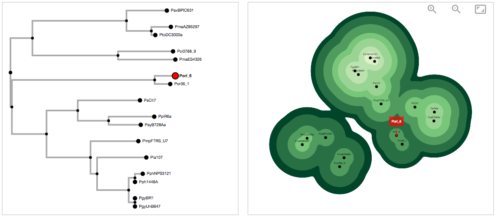
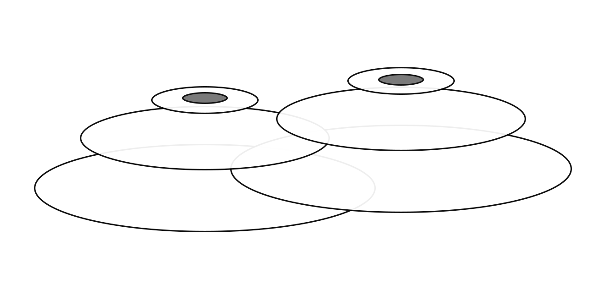
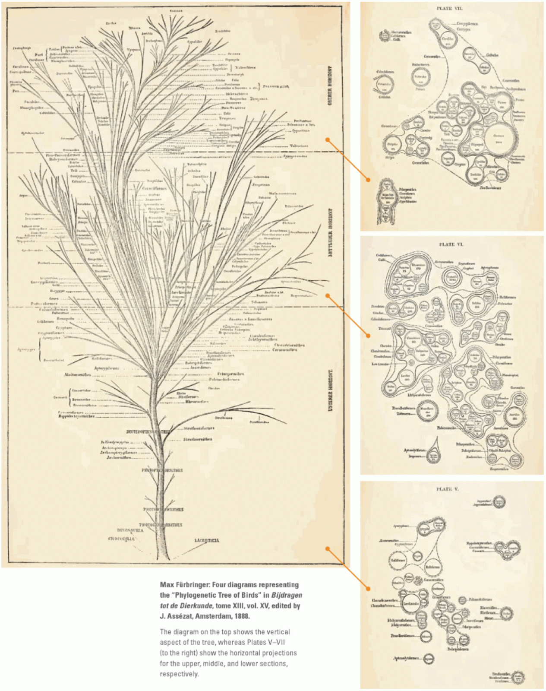

Percent of nodes that have stopped moving:
Topo-phylogeny source code can be downloaded here. It is available for use or modification under the GNU General Public License, version 2.
Topo-phylogeny is an alternative approach to displaying phylogenetic relationships. It visualizes each node of a tree as a point on a two-dimensional map, with the placement, surrounding color and distance from other nodes determined by its attraction to parent and sister nodes, branch length, and hierarchical level. Topographic contour shapes indicate which level related nodes are connected at. Gaps between clusters indicate clades from a different lineage.
Begin by pasting the contents of a Newick file into the input box, or load a file from your hard drive by clicking the 'Select File' button. The Newick file gets parsed with Newick.js by Jason Davies and converted into a JSON object. This object is passed into d3.phylogram.js by Ken-ichi Ueda to build the phylogenetic tree and radial dendogram visible on the left side of the page.
On the right side of the page, the Topo-phylogeny is created as an SVG image. Each node consists of a stack of circles, with the top circle in the stack containing the label and each circle below it sized and coloured according to its distance from the root and the cumulative branch length. The nodes determine their positions according to three basic principles:
Circles are drawn to the screen according to their hierarchical level (see diagram below), so when nodes come together their stack of circles interleave with one another. This ensures that higher level circles don't get covered by lower level circles. A combination of SVG blur and sharpen filters (collectively known as the "goo" effect) blends circles from the same level together, creating the perception of a single combined shape. This helps create the topographic map effect.
This tool was written by Jamie Waese with support from David Guttman and Nicholas J. Provart at the University of Toronto. It uses a combination of D3.js, jQuery and Materialize.css
This visualization paradigm is similar to Max Fürbringer's "Phylogenetic Tree of Birds" diagram, which shows groups of related items on slices of a hierarchical tree. This was published in 1888 in Untersuchungen zur Morphologie und Systematik der Vögel.
This image was published in Isabel Meirelles' Design for Information: An Introduction to the Histories, Theories, and Best Practices Behind Effective Information Visualizations. The digital scan was accessed from The Genealogical World of Phylogenetic Networks blog.
If there are many nodes and performance is slow, you may wish to temporarily pause the screen refresh function. The nodes will continue to adjust their positions background. Wait a few minutes and then un-pause the screen.
Pause Screen Refresh Un-Pause Screen RefreshThe SVG "goo" effect may reduce performance if you have more than a hundred nodes. You may wish to turn it off until the nodes have stopped moving.
Turn off "goo" effect Turn on "goo" effectThe "tightness" of the layout can be adjusted here. The default setting is 2. Topo-phylogeny charts with more than a hundred nodes should be in the 3-6 range. Charts with more than a thousand nodes should be in the 10-50 range. However, these are just guidelines and you may prefer different settings.
Use the mouse wheel to zoom in and out of the Topo-phylogeny chart.
You can adjust the canvas position by dragging it up and down or side to side. Make sure to grab the white background and not the nodes.
Manually adjust node positions by clicking and dragging them wherever you want them to go.
Toggle link lines on and off with the "Show Links" button.
If you realy just want a big picture view, you can hide the labels with the "Hide Labels" button.
Selecting a node will create a red marker that remains in place, even after you mouse away. Click the node again (or click another node) to deselect it.
Holding shift while selecting a node will create a green marker that remains in place. Shift click the node again (or shift click another node) to deselect it.
Use the alphabetized dropdown menu beneath the canvas to find and select the node you're looking for.
The force layout function remains active until the nodes find their optimal position and stop moving. You can pause the movement with the "Pause" button, and restart it with the "Restart" button.
The "Restart" button resets all the node positions and builds a new Topo-phylogeny chart.
Click the "Save" button to save a PNG or SVG copy of the chart.
From the Options tab, pause the screen refresh function so the nodes can find their optimal positions faster.
From the Options tab, toggle SVG "goo" effects on and off to increase performance.
From the Options tab, use the slider to adjust the "tightness" of the Topo-phylogeny layout.